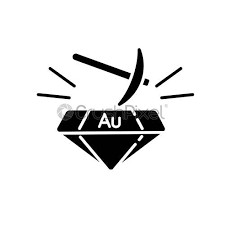
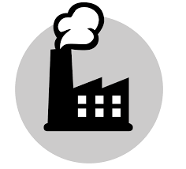

Génie Minéral
Le cursus de formation du département Génie Minéral, l'un des plus anciens départements de l'Ecole Mohammedia d'Ingénieurs, est défini de façon à doter l’ingénieur d’outils modernes nécessaires à :
- L'évaluation et la valorisation durable des richesses naturelles.
- La connaissance du sol et du sous-sol et la prévention des catastrophes naturelles.
Options:
- Hydrogéologie et géologie de l’Ingénieur.
- Géologie minière.
- Génie Minier.

Génie Industriel
Le génie industriel englobe la conception, l'amélioration et l'installation de systèmes intégrés.Ce génie a pour objectif de fournir aux différents secteurs de l’économie (Manufactures, PME, Banques…) des Ingénieurs capables de faire la conception, la gestion, l’ organisation et l’optimisation du fonctionnement des systèmes complexes de production
Options:
- Logistique
- Productique,
- Gestion de projets,
Génie MIS
La formation du génie MIS Modélisation et Informatique Scientifique)( est conçue de manière à assurer, en plus d’une bonne maîtrise de l’outil informatique et des outils du calcul scientifique, une formation technique aussi large que possible qui couvre différents domaines de l’Ingénierie, tout en privilégiant les secteurs de pointe, qui offrent plus de potentialités pour une mise à profit de l’outil informatique. Une importance particulière est également accordée aux nouvelles techniques de communication et de management.
Génie des procédés
Le génie des procédés a pour but l’utilisation des outils scientifiques et techniques pour la transformation de la matière dans un cadre industriel. Il consiste en la conception, le dimensionnement et la gestion d’un procédés industriel dans le respect des contraintes économiques, techniques, environnementaux, de développement durable et de sécurité.